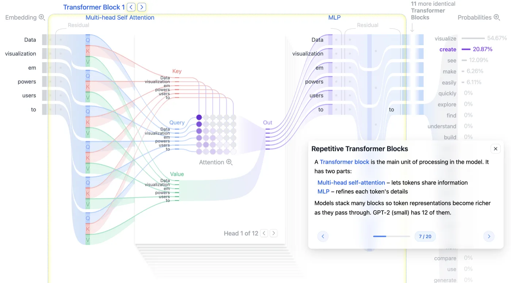
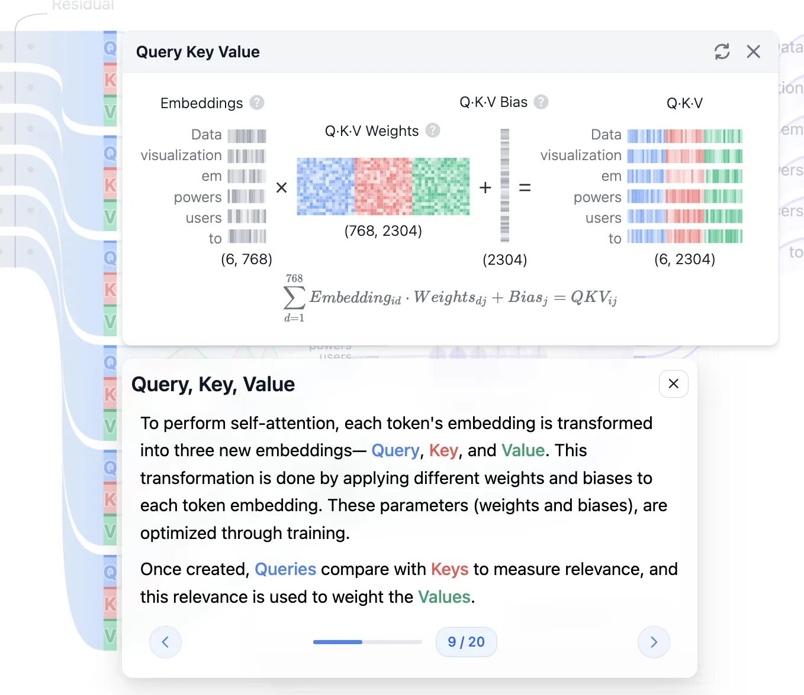
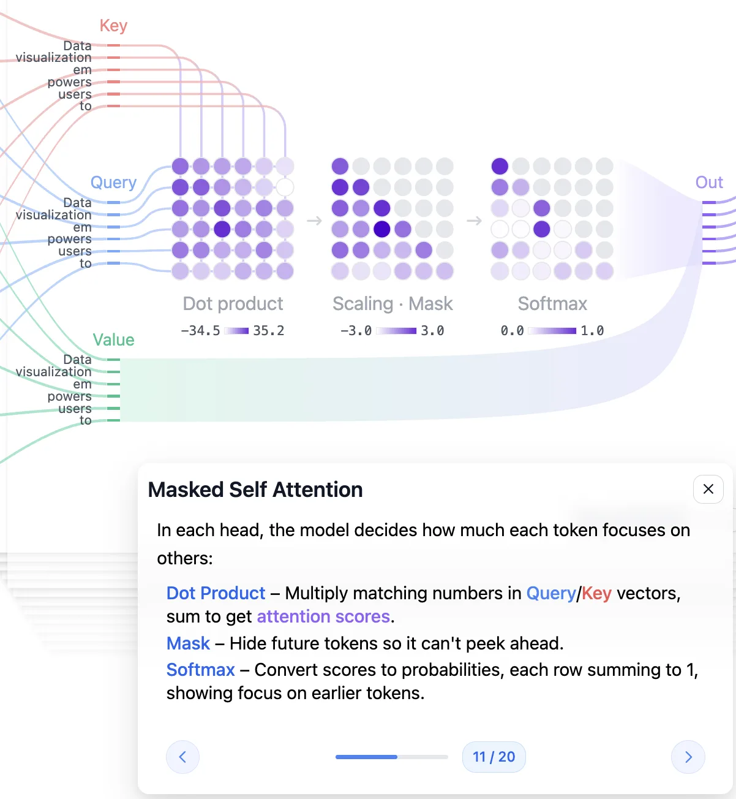
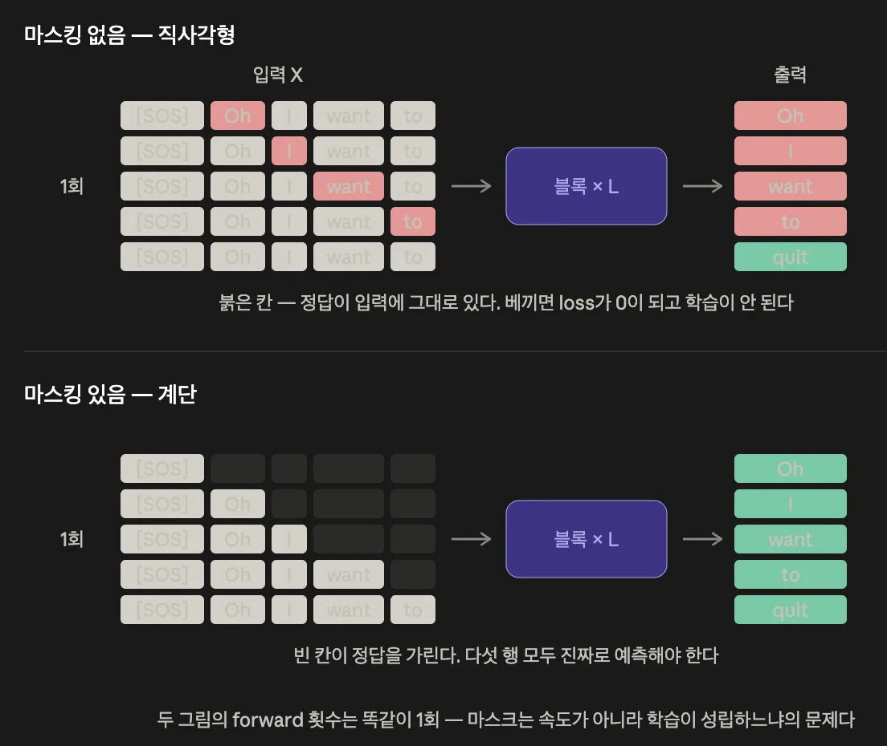
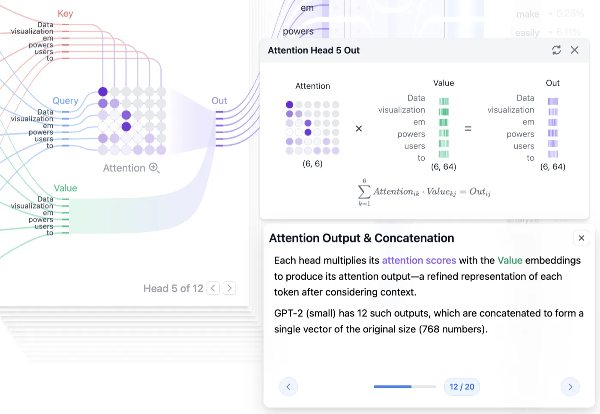
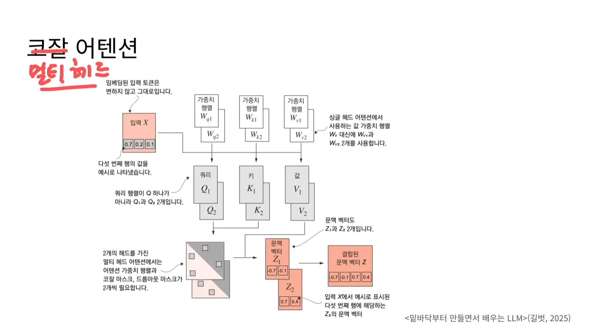

llm
2편. 어텐션은 실제로 뭘 계산하나
셀프 어텐션이 Q와 K와 V를 만들고 내적하고 마스킹하고 Softmax를 거쳐 문맥 벡터를 만들기까지, 그리고 헤드를 12개로 쪼개는 이유
2026.08.09 · 25 min read
1편에서 Data visualization empowers users to는 6개 토큰이 되고, 각 토큰은 768차원 벡터가 되고, 거기에 위치 벡터가 더해졌습니다. 트랜스포머 아키텍처의 맨 왼쪽 Embedding 칸까지입니다.
이 벡터만으로는 인도 음식점에 가던 중 주행 금지 표지판을 보았다의 인도가 나라 India인지 보도블록인지 알 수 없습니다. 임베딩 행렬은 문장이 뭐였든 인도면 같은 값을 돌려주니까요.
셀프 어텐션(Self-Attention) 이 이걸 해결합니다. Transformer Block 안 절반을 차지하는 부분이고, 1편 4부의 텐서 세 성질(정보 보존 · 가중합 · 내적)이 여기서 조립됩니다. 별다른 언급이 없으면 GPT-2 small 기준입니다.
1부. 어텐션의 등장 배경
1.1 임베딩이 담지 못하는 것 - 맥락
1편 4부에서 정리한 텐서의 세 가지 성질입니다.
- 성질 1 - 통과해도 정보는 남는다. 가중치 행렬과 곱해도 원래 정보가 사라지지 않는다
- 성질 2 - 가중합은 정보를 섞는다. 가중치가 큰 쪽의 정보를 더 많이 갖는다
- 성질 3 - 내적은 관련도를 잰다. 방향이 비슷하면 값이 크고, 무관하면 작거나 음수다
위 세 가지 성질은 어텐션 과정에서 이렇게 이야기할 수 있습니다. 내적으로 관련도를 재고(성질 3), 그 관련도를 가중치 삼아 정보를 섞고(성질 2), 그래도 원래 정보는 남아 있다(성질 1).
임베딩 행렬은 토큰이 가지는 vocab 상의 사전적 의미를 알려줍니다. 위치 인코딩은 몇 번째인지에 대한 순서를 부여합니다. 그런데 인도가 나라인지 보도인지는 둘 다 답하지 못합니다. 그건 주변에 무슨 단어가 있느냐에 따라 달라지기 때문입니다.
이를 해결하기 위해서는 각 토큰이 같은 문장 안의 다른 토큰들을 실제로 들여다보고, 그 정보를 자기 벡터에 반영하게 만들어야 합니다. 이를 위해 셀프 어텐션을 사용합니다.
1.2 RNN의 방식과 한계
이 문제를 어텐션이 처음 푼 건 아닙니다. 그전에 RNN이 있었고, 어텐션은 원래 RNN의 약점을 메우는 보조 장치로 나왔습니다.
RNN은 단어를 앞에서부터 하나씩 읽으면서 은닉 상태(hidden state) 라는 그릇 하나를 계속 갱신합니다. 1번 단어를 읽고 갱신, 2번 단어를 읽고 갱신, 이런 식입니다. 문장을 다 읽고 나면 그 그릇 하나에 문장 전체의 요약이 담겨 있다는 가정입니다.
번역기는 이렇게 만들어진 요약 하나를 넘겨받아 번역문을 만들었습니다. 문제는 여기서 생깁니다.
- 초반 정보가 희석된다
- 그릇 크기는 그대로인데 문장이 길어질수록 계속 덮어씁니다.
- 특정 단어를 콕 집어 참조할 수 없다
- 넘겨받는 게 압축된 요약 하나뿐입니다.
어텐션의 최초 형태가 이 지점에서 나왔습니다. 요약 하나만 넘기는 대신, 읽는 동안 만들어진 은닉 상태를 전부 넘겨 참조하게 한 겁니다. 그리고 그중 지금 필요한 단어에는 주의를 많이 기울이고, 안 중요한 단어에는 덜 기울이도록 했습니다. 이름 그대로 "주의(attention)"죠.
효과는 확실했는데 비용이 따라왔습니다.
- 모든 은닉 상태를 전부 보관해야 한다
- 저장 공간과 메모리를 많이 씁니다.
- 입력 텍스트 길이에 제한이 생긴다
- 무한정 보관할 수 없기 때문입니다.
왜 중요한가 - 1편 2.4절에서 본 컨텍스트 크기 제한이 여기서 시작됩니다. "모든 걸 참조하려면 모든 걸 들고 있어야 한다"는 이 트레이드 오프는 트랜스포머로 넘어와서도 그대로 남아있습니다.
1.3 셀프 어텐션의 정의
여기서 논문 제목이 나옵니다. Attention is All You Need. RNN을 떼어내고 어텐션만 남긴 겁니다. 순차 의존이 사라지니 토큰을 전부 동시에 처리할 수 있고, 그게 GPU 병렬화의 전제입니다.
그런데 RNN을 떼면 참조할 은닉 상태도 같이 사라집니다. 그럼 뭘 보고 뭘 참조할까요? 자기 자신을 봅니다.
셀프 어텐션이란 쿼리와 키로 같은 정보를 쓰는 경우를 말합니다.
- 기존 어텐션 - 번역문을 만드는 쪽이 원문을 읽은 쪽의 상태를 참조
- 참조하는 쪽과 참조당하는 쪽이 다릅니다. 그래서 셀프가 아닙니다.
- 셀프 어텐션 - 자기가 가진 토큰들끼리 서로를 참조
- 참조하는 쪽과 참조당하는 쪽이 같습니다. 그래서 "셀프"입니다.

동작을 문장 하나로 줄이면 이렇습니다. 쿼리의 각 단어가 키의 여섯 텐서 각각과 내적을 해서 가중합을 구하고, 그 가중합을 다음 층의 입력으로 쓴다. 한 층을 통과하고 나면 인도 자리의 벡터는 더 이상 사전에서 꺼내온 인도가 아니라, 문장 안의 다른 단어들과의 관련도가 반영된 인도 가 됩니다.
음식점과의 관련도가 높게 나오면 나라 India 쪽으로, 주행 금지 표지판과의 관련도가 높게 나오면 보도블록 쪽으로 벡터가 기웁니다.
그리고 이 층은 한 번만 통과하는 게 아닙니다. GPT-2 small은 블록이 12개라 12번 반복합니다. 성질 1 덕분에 통과할 때마다 정보가 날아가지 않으니 쌓는 게 가능한 거고요.
2부. Q·K·V, 세 개의 역할
2.1 데이터베이스 비유
셀프 어텐션을 계산하려면 Q, K, V 세 가지가 필요합니다. 이름이 낯설게 들리는데, 데이터베이스를 떠올리면 역할이 바로 잡힙니다.
- Q (Query) - 질의. 사용자가 던지는 질문
- K (Key) - 그 질의와 매칭되는 데이터를 찾는 데 쓰는 것. 데이터베이스의 키나 인덱스와 같은 자리
- V (Value) - 쿼리와 키를 매칭해서 찾아낸 실제 데이터
여기서 오해하기 쉬운 지점 하나. Q, K, V는 뭔가 특별한 존재가 아닙니다. 그냥 특정 정보를 가진 텐서일 뿐입니다. 출발점은 전부 1편에서 만든 그 768차원 입력 벡터 하나고요.
하나의 입력 벡터가 어떻게 세 갈래로 갈라지는지는 2.4절 그림에서 숫자까지 함께 보게 됩니다.
2.2 가중치 없는 셀프 어텐션
곧바로 가중치를 들고 오면 계산이 복잡해 보이니, 먼저 가중치가 없는 버전으로 뼈대만 보겠습니다. 실제 모델은 아니지만 어텐션의 골격이 그대로 드러납니다.
입력 토큰이 T개 있고, 그중 두 번째 토큰 x(2)를 쿼리로 잡았다고 합시다. 설명을 위해 하나를 고른 것뿐이고, 실제로는 모든 토큰이 차례로 쿼리가 됩니다.
- Q - 임베딩된 쿼리 토큰. 여기서는
x(2) - K - 임베딩된 모든 토큰. 여기서는
x(1)~x(T)
Q와 K를 행렬곱해서 어텐션 점수를 얻습니다. 표기는 w를 씁니다.
w21 = x(2) · x(1)
^^ ^^ ^^
| Q는 K는
| 2번 1번
|
Q가 2번, K가 1번일 때의 어텐션 점수
x(2)를 쿼리로 두면 w21, w22, w23 ... w2T까지 T개의 점수가 나옵니다. 이 점수들을 정규화해서 전부 더하면 1이 되도록 만드는데, 이 과정이 Softmax입니다. 그렇게 얻은 값을 어텐션 가중치라고 부릅니다.
의미는 단순합니다. 쿼리 토큰과 가장 관련이 높은 키 토큰이 뭔지 찾는 과정입니다. 1편 3.4절과 이어보면 자연스럽습니다. 벡터의 행렬곱 값이 크다는 건 좌표 평면에서 가까운 위치에 있다는 뜻이고, word2vec 관점에서 비슷한 의미를 가진다고 해석할 수 있으니까요.
마지막으로 V가 등장합니다. 가중치 없는 버전에서는 V도 입력을 임베딩한 그 벡터입니다. Q와 K를 곱해 정규화한 어텐션 가중치를, V와 다시 행렬곱합니다. 이걸로 한 사이클이 끝납니다.
Q · K → 어텐션 점수 → Softmax → 어텐션 가중치 → × V → 결과
2.3 Wq·Wk·Wv - 학습되는 세 가중치
이제 진짜 버전입니다. 입력 벡터를 그대로 Q, K, V로 쓰는 대신, 모델이 학습으로 얻은 가중치 행렬 Wq, Wk, Wv를 각각 곱합니다.
- Query 벡터 -
x(2)에Wq를 곱한 것을 쿼리q(2)로 쓴다 - Key 벡터 -
x(2)에Wk를 곱한 것을 키k(2)로 쓴다 - Value 벡터 -
x(2)에Wv를 곱한 것을 값v(2)로 쓴다
나머지 절차는 2.2절과 똑같습니다. q(2)와 k(2)를 행렬곱해 어텐션 점수를 구하고, 정규화해서 어텐션 가중치를 구하고, V에 그 가중치를 곱합니다. 이렇게 나온 결과를 문맥 벡터(Context Vector) 라고 부릅니다. 문맥 벡터는 키 토큰 개수만큼 생기고, 그걸 전부 더해서 최종 문맥 벡터를 얻습니다.
그러면 이 가중치 셋을 곱해서 정확히 뭐가 달라지느냐가 핵심 질문입니다.
가중치가 없으면 같은 입력 토큰에 대해 Q, K, V가 전부 똑같습니다. x(2)가 쿼리일 때도 x(2), 키일 때도 x(2), 값일 때도 x(2)죠. 서로 다른 세 역할을 맡기고 싶은데 세 개가 같은 값이면 역할 구분이 생기지 않습니다.
서로 다른 Wq, Wk, Wv를 곱하면 같은 입력 토큰이라도 q, k, v 벡터가 서로 다른 값을 갖습니다. 같은 사람이 상황에 따라 질문자, 색인, 내용물의 세 얼굴을 갖는 셈입니다. 그리고 이 가중치들은 사람이 설계한 게 아니라 학습을 통해 사전에 얻은 값입니다.
왜 중요한가 - 어텐션이 학습할 수 있는 부분이 사실상 여기입니다. 어텐션 점수 자체는 계산 결과일 뿐 파라미터가 아닙니다. 모델이 "무엇에 주의를 기울일지"를 배우는 통로는 Wq, Wk, Wv 이 세 행렬이고, 학습이 바꾸는 것도 이 값들입니다.
여기서 성질 1이 다시 등장합니다. 입력 벡터가 Wv를 통과해 Value가 됐어도, 통과 전 정보가 사라지지 않습니다. 그래서 Value는 여전히 "그 토큰이 가진 정보"입니다. 이 사실이 3.4절에서 결정적으로 쓰입니다.
2.4 묶인 QKV 가중치 - 768 × 2304
개념적으로는 입력 벡터에 각 가중치를 따로 곱하는 게 맞습니다. 그런데 PyTorch 같은 최신 딥러닝 프레임워크가 실제로 구현하는 방식은 조금 다릅니다. Transformer Explainer는 그 차이를 잘 반영해서 시각화해 두었고요.
실제로는 Wq, Wk, Wv를 하나로 묶어서 연산합니다.
GPT-2 small 임베딩 차원 = 768
Wq 768 × 768
Wk 768 × 768 → 묶으면 768 × 2304
Wv 768 × 768 (768 × 3 = 2304)
이유는 순전히 속도 때문입니다. 행렬곱을 3번 따로 독립적으로 수행하는 것보다, 거대한 행렬 하나로 묶어서 한 번에 계산하는 쪽이 GPU의 병렬 처리 성능을 훨씬 잘 끌어씁니다. 결과는 똑같고, 걸리는 시간만 줄어드는 최적화입니다.
왜 중요한가 - 서빙 관점에서 이런 게 성능을 가릅니다. GPU는 연산 자체보다 "커널을 몇 번 띄우고 메모리를 몇 번 오가느냐"에서 시간을 많이 잃습니다. 같은 계산을 큰 덩어리 하나로 합치면 그 오버헤드가 3분의 1로 줍니다.

Embeddings (6, 768) × Q·K·V Weights (768, 2304) + Bias (2304) = Q·K·V (6, 2304). 가중치 행렬이 파랑·빨강·초록 세 덩어리로 칠해져 있는데, 저게 각각 Wq·Wk·Wv입니다. 개념은 셋이지만 메모리에는 하나로 붙어 있고 곱셈도 한 번입니다. (출처: Transformer Explainer)3부. 어텐션 점수 계산하기
이제 Q, K, V가 준비됐습니다. 여기서부터가 Masked Self Attention이고, Causal Attention(코잘 어텐션) 이라고도 부릅니다. 네 단계로 나뉩니다.

Dot product → Scaling · Mask → Softmax를 지나며 값의 범위가 −34.5~35.2 → −3.0~3.0 → 0.0~1.0으로 좁혀집니다. 세 번째 행렬이 왼쪽 아래만 남은 계단 모양인 게 보이는데, 그게 마스킹의 결과입니다. (출처: Transformer Explainer)3.1 내적으로 관련도 재기
첫 단계는 내적(Dot Product) 입니다. 입력 벡터에 Wq, Wk를 곱해 얻은 Q, K 벡터를 내적합니다.
성질 3이 여기서 그대로 쓰입니다. 내적 결과는 두 벡터의 값이 비슷할수록 커집니다. 즉 Query와 각 Key를 내적한 결과는 "이 Key가 Query와 얼마나 연관돼 있나, 얼마나 비슷한 방향인가"를 계산한 값입니다.
토큰이 6개면 각 토큰이 차례로 쿼리가 되고, 각각이 6개 키와 내적하니 결과는 6 × 6 행렬이 됩니다. 문장 안의 모든 단어 쌍에 대한 관련도 표가 한 번에 나오는 셈입니다.
3부 첫머리 그림의 맨 왼쪽 Dot product 행렬이 바로 이것입니다. 6행 6열, 각 칸이 "행에 해당하는 Query와 열에 해당하는 Key의 내적값"이죠.
값의 범위를 짚어둬야 뒤가 이해됩니다. 내적 결과는 음의 무한대에서 양의 무한대 사이 아무 값이나 될 수 있습니다.
- 양수이고 값이 클수록 → 두 벡터는 유사하다
- 음수일수록 → 두 벡터는 관련이 없다
이 상태로는 가중합에 쓸 수 없습니다. 성질 2가 성립하려면 가중치가 양수이면서 전체 합이 1이어야 하는데, 지금 값들은 음수일 수도 있고 1보다 클 수도 있으니까요. 그래서 정규화가 필요하고, 그 전에 값을 손보는 단계가 먼저 들어갑니다.
3.2 스케일링과 마스킹
두 번째 단계는 값을 두 번 손보는 구간입니다. 먼저 스케일링(Scaling), 그다음 마스킹(Masking) 입니다.
스케일링 - √64로 나누기
위 그림의 숫자 범위를 보면 무슨 일이 벌어지는지 보입니다.
Dot product −34.5 ~ 35.2
↓ 스케일링
Scaling · Mask −3.0 ~ 3.0
↓ Softmax
Softmax 0.0 ~ 1.0
내적값을 차원 수의 제곱근으로 나눕니다. 헤드 하나가 담당하는 차원이 64이므로 √64 = 8로 나누는 셈입니다. 이 64는 4.2절에서 다시 만납니다.
왜 나눌까요. 768개(정확히는 헤드당 64개) 숫자를 곱해서 더한 값이라 내적 결과는 쉽게 수십 단위로 커집니다. 그 상태로 exp()를 태우면 제일 큰 값 하나만 살아남고 나머지가 전부 0에 수렴합니다. 가중합이 아니라 사실상 "가장 큰 것 하나만 고르기" 가 돼버립니다. 값의 폭을 미리 좁혀두면 Softmax가 부드러운 분포를 내놓고, 학습도 안정적으로 진행됩니다.
마스킹 - 미래 토큰 가리기
이어서 Masking입니다. Q와 K를 내적한 결과 행렬에 마스킹을 수행합니다. 역할은 한 줄로 정리됩니다. 예측해서 알아내야 할 미래 정보를 맥락으로 쓰지 못하게 막는 가림막.
왜 굳이 막아야 할까요. 학습 방식을 보면 이유가 나옵니다.
트랜스포머는 훈련할 때 정답 문장을 통째로 넣고 병렬로 학습합니다. 단어가 7개면 정답 7개를 한 번에 줘서, 한 번의 계산으로 모든 위치의 예측을 얻는 방식입니다. 이게 트랜스포머가 빠른 이유의 큰 부분입니다.
그런데 이 방식에는 구멍이 있습니다. 맞혀야 할 정답이 입력 안에 이미 들어 있습니다.
Oh I want to quit을 학습한다고 해봅시다. 각 자리에서 모델이 맞혀야 할 답은 이렇습니다.
자리 1 2 3 4 5
입력 [SOS] Oh I want to
정답 Oh I want to quit
↑ ↑
3번 자리의 정답이 입력 4번 칸에 그대로 있음
정답 줄은 입력 줄을 한 칸 옮긴 것과 같습니다. 그래서 3번 자리에서 맞혀야 할 want가 입력의 바로 오른쪽 칸에 버젓이 놓여 있습니다.
그러면 모델은 문법도 의미도 배울 필요가 없습니다. "항상 오른쪽 칸을 베껴라" 는 규칙 하나면 정답률이 100%가 되니까요.
모델이 잔머리를 굴린 게 아닙니다. 학습이란 틀린 정도가 줄어드는 쪽으로 조금씩 움직이는 과정인데, 베끼기는 그 방향으로 가는 지름길입니다. 언어를 이해하는 길보다 훨씬 빠르고 쉬우니 자연히 그쪽으로 갑니다.
문제는 이 지름길이 실전에서 막혀 있다는 것입니다. 실제로 문장을 만들 때는 오른쪽 칸이 비어 있습니다. 아직 만들지 않은 단어니까요. 베끼기만 익힌 모델은 베낄 대상이 사라지자 아무것도 못 합니다.
그래서 학습할 때도 오른쪽 칸을 미리 가려둡니다. 지름길을 아예 없애버리면 모델은 먼 길로 갈 수밖에 없고, 그 먼 길이 바로 문법과 의미를 배우는 길입니다.
구현은 단순합니다. 내적한 결과에 극단적인 음수 값을 줍니다. N번째 토큰이 쿼리면, N번째부터 끝까지의 자리를 전부 극단적인 음수로 덮어씁니다. 다음 단계에서 exp()를 통과하면 이 값들은 0이 됩니다. 가중치가 0이면 그 정보는 가중합에 하나도 섞이지 않습니다. 완벽하게 가려진 겁니다.
행렬 모양으로 보면 직관적입니다.
마스킹 없음 (직사각형) 마스킹 있음 (계단)
■ ■ ■ ■ ■ ■ ■ □ □ □ □ □
■ ■ ■ ■ ■ ■ ■ ■ □ □ □ □
■ ■ ■ ■ ■ ■ → ■ ■ ■ □ □ □
■ ■ ■ ■ ■ ■ ■ ■ ■ ■ □ □
■ ■ ■ ■ ■ ■ ■ ■ ■ ■ ■ □
■ ■ ■ ■ ■ ■ ■ ■ ■ ■ ■ ■
모든 토큰이 모든 토큰을 봄 각 토큰은 자기와 그 앞만 봄

왜 중요한가 - GPT가 "다음 토큰 하나를 예측하는" 모델일 수 있는 근거가 이 계단 모양입니다. 그리고 이 계단은 4편의 KV Cache로 직결됩니다. 각 토큰이 자기 앞쪽만 본다는 건, 앞쪽 토큰들의 K와 V가 나중에도 안 변한다는 뜻이거든요. 안 변하니 캐싱할 수 있습니다.
3.3 Softmax - 절댓값이 아니라 exp()인 이유
세 번째 단계가 Softmax입니다. 목적은 명확합니다. 마스킹까지 마친 행렬의 값들을 양수이면서 총합이 1이 되도록 만드는 것. 성질 2가 요구하는 조건 그대로입니다.
동작도 두 줄입니다.
1) 각 값에 exp() 를 취한다 → 전부 양수가 된다
2) 그 값들의 총합으로 각각을 나눈다 → 총합이 1이 된다
그런데 여기서 한 번 걸립니다. 양수로 만드는 게 목적이라면 절댓값을 취해도 되는 것 아닌가? 절댓값이 훨씬 싸고 간단한데요.
안 됩니다.
내적 결과는 두 벡터의 관련도 정보를 담고 있습니다. 양수이고 클수록 유사하고, 음수일수록 무관합니다. 그런데 여기에 절댓값을 씌우면 어떻게 될까요.
내적 결과 절댓값 exp()
+5.0 → 5.0 큰 값
-5.0 → 5.0 ✗ 아주 작은 값 ✓
+0.1 → 0.1 1에 가까운 값
-5.0은 "완전히 무관하다"는 뜻인데, 절댓값을 씌우면 +5.0과 구별이 안 됩니다. 가장 관련 없는 것이 가장 관련 있는 것과 같은 대접을 받게 됩니다. 원래 갖고 있던 관련도 정보를 통째로 훼손하는 겁니다.
exp()는 다릅니다. 음수였던 값은 exp를 거쳐도 작은 값으로 남고, 양수였던 값은 큰 값이 됩니다. 순서가 그대로 보존됩니다. 즉 기존에 갖고 있던 정보와 경향을 유지하면서 양수로 만드는 방법이 exp()입니다. 지수 함수라 값 차이도 벌어집니다.
그리고 3.2절의 마스킹이 여기서 맞물립니다. 마스킹은 극단적인 음수를 넣는 것이었죠. exp()에 극단적인 음수를 넣으면 결과는 0에 수렴합니다. 마스킹과 Softmax가 한 세트로 설계된 것입니다. 순서를 바꾸면 성립하지 않습니다.
이렇게 얻은 결과를 어텐션 가중치라고 부릅니다. 다만 이걸 어텐션 점수라고 부르는 자료도 많아서, 어느 쪽인지는 문맥으로 판단해야 합니다. 이 혼용은 막혔던 곳에 따로 정리했습니다.
3.4 V와 곱해 문맥 벡터 만들기
마지막 단계입니다. 어텐션 가중치를 V 벡터와 곱합니다. 값이 양수이고 합이 1인 가중치로 여러 벡터를 섞는 것, 정확히 성질 2의 Weighted Sum입니다.
가중치가 0.7, 0.25, 0.02, 0.03이라면 결과는 1번 텐서의 정보를 제일 많이 갖고, 2번을 그다음으로 갖고, 3·4번은 거의 갖지 않는 벡터가 됩니다. "Query와 유사도가 큰 정보의 Value를 많이 담은 결과를 만들겠다"는 의도가 이 곱셈 하나로 실현됩니다.

Attention (6, 6) × Value (6, 64) = Out (6, 64). 여기 나오는 64가 4.2절에서 다룰 헤드 하나가 담당하는 차원이고, Head 5 of 12는 이 계산이 12벌 돌아간다는 뜻입니다. (출처: Transformer Explainer)어텐션의 결과는 본질적으로 Key(에서 나온 Value) 정보들의 가중합입니다. Query의 정보는 "얼마나 섞을지"를 정하는 데에만 쓰이고, 결과물 안에는 간접적으로만 들어갑니다.
번역기 예시가 이걸 보여줍니다.
- Query -
Orange(영어) - Keys -
오랜,지병,으로,쓰러졌다(한국어)
Query의 정보 공간은 영어인데, 가중합 결과의 정보 공간은 한국어입니다. 결과가 Value들의 가중합인데, Value는 Key가 Wv를 통과해서 나온 것이고, 성질 1에 따라 통과해도 원래 정보가 남아 있으니 Value는 결국 Key로부터 만들어진 정보이기 때문입니다.
엄밀히 말하면 이 예시는 셀프 어텐션이 아니라 번역기의 교차 어텐션입니다. 쿼리와 키의 출처가 서로 다르니까요. 그래도 예시로 쓸 수 있는 건 "출력은 Value들의 가중합" 이라는 성질이 셀프 어텐션에서도 똑같이 성립하기 때문입니다.
왜 중요한가 - "어텐션이 정보를 어디서 가져오는가"에 대한 답이 이겁니다. 어텐션은 새 정보를 만들지 않습니다. 이미 문장 안에 있던 정보를 골라 섞을 뿐입니다. 그래서 셀프 어텐션을 한 층 통과한 인도는, 같은 문장 안 음식점이나 표지판의 정보가 섞여 들어간 인도가 됩니다.
4부. 멀티 헤드
4.1 멀티 헤드 어텐션(MHA)
지금까지 본 게 헤드 하나짜리 어텐션입니다. Wq, Wk, Wv 한 세트로 계산했죠. 그런데 실제 모델은 이걸 여러 벌 운영합니다.
논리는 간단합니다. 어떤 가중치가 특정 종류의 맥락을 잘 파악하도록 맞춰져 있으면, 그 맥락에 대해서는 더 좋은 예측을 냅니다. 그렇다면 그런 가중치를 하나만 두지 말고 여러 개 두면, 다양한 문맥의 입력에 대해 고르게 좋은 결과를 얻을 수 있습니다.
이 가중치 행렬 한 세트를 헤드(Head) 라고 부르고, 여러 헤드를 운영하는 어텐션을 멀티 헤드 어텐션(Multi-Head Attention, MHA) 이라고 합니다.
- 헤드의 개수 = 모델이 가진 가중치 행렬 세트의 개수
- 각 헤드는 서로 다른 맥락(문법, 문맥, 단어 간 연관성 등)에 특화된 가중치를 가집니다.
- 헤드 수만큼 결과도 늘어난다
- 어텐션 가중치가 헤드 수만큼 생깁니다.
- 문맥 벡터도 헤드 수만큼 생깁니다.
왜 중요한가 - 헤드들 사이에 순서 의존이 전혀 없습니다. 12번 헤드가 1번 헤드의 결과를 기다릴 이유가 없죠. 그래서 각 헤드는 완전히 병렬로 처리 가능합니다. RNN을 버리고 얻은 병렬성이 여기서 한 겹 더 늘어나는 셈입니다.
4.2 768 ÷ 12 = 64
여기서 자주 오해가 생깁니다. 헤드를 12개 두면 계산량이 12배가 될까요? 아닙니다. 768차원을 12개로 나눠 갖습니다.
GPT-2 small 임베딩 차원 = 768
GPT-2 small 헤드 개수 = 12
768 ÷ 12 = 64
→ 헤드 하나가 담당하는 차원 = 64
3.4절 그림의 Value (6, 64)와 Out (6, 64)에 찍혀 있던 64가 바로 이 값입니다. 토큰은 6개 그대로인데 차원만 768이 아니라 64인 이유가 여기 있었습니다. 같은 그림의 Head 5 of 12 표시도 이제 읽힙니다.
왜 중요한가 - 768차원 전체를 12번 계산하는 게 아니라, 64차원짜리 계산을 12번 하는 겁니다. 총 연산량은 헤드 하나로 768차원을 통째로 처리하는 것과 같은 급이면서, 서로 다른 관점 12개를 동시에 얻습니다.
4.3 헤드 출력의 연결 - 더하지 않는 이유
헤드마다 문맥 벡터가 하나씩 나옵니다. 12개 헤드면 64차원 문맥 벡터가 12개죠. 이걸 어떻게 합칠까요.
각 헤드의 문맥 벡터를 더하지 않고 "연결(concatenate)"합니다. 그렇게 최종 결합 문맥 벡터를 만듭니다.
헤드 1 문맥 벡터 (64) ┐
헤드 2 문맥 벡터 (64) │
... ├─ 연결 → 768차원 문맥 벡터
헤드 11 문맥 벡터 (64) │
헤드 12 문맥 벡터 (64) ┘
64 × 12 = 768
더하면 안 되는 이유는 헤드의 존재 이유와 맞물립니다. 헤드들은 서로 다른 관점을 담으라고 나눠놓은 건데, 더해버리면 그 관점들이 한 덩어리로 뭉개집니다. 문법을 본 헤드와 지시 관계를 본 헤드의 결과가 섞여 구분이 사라집니다. 연결하면 각 헤드의 결과가 자기 자리를 그대로 유지합니다.
그리고 64 × 12 = 768입니다. 입력으로 들어온 차원과 나가는 차원이 똑같이 768입니다.
이게 우연이 아닙니다. 입력 차원과 출력 차원이 같아야 어텐션 모듈(디코더 블록)을 반복해서 통과시키기 편하기 때문입니다. 1편 3.5절에서 "768은 왜 못 바꾸나"를 이야기했는데, 그 답의 절반이 여기 있습니다. 나가는 값이 다시 같은 모양으로 들어와야 블록 12개를 줄줄이 쌓을 수 있으니까요.

Wq1·Wq2처럼 두 벌이고, 쿼리도 Q₁·Q₂ 두 개, 문맥 벡터도 Z₁·Z₂ 두 개입니다. 마지막에 둘을 더하지 않고 옆으로 이어붙여 결합된 문맥 벡터 Z가 됩니다. (출처: 박해선, 밑바닥부터 만들면서 배우는 LLM 3.6)전체 흐름 정리
6개의 768차원 벡터 (1편의 결과물)
↓ × 묶인 가중치 행렬 (768 × 2304)
Q, K, V 각각 6개 벡터
↓ 헤드 12개로 분할 (768 = 12 × 64)
헤드마다 Q, K, V 각 64차원
↓ Q · K 내적 (성질 3)
어텐션 점수 행렬 (6 × 6) 범위 -∞ ~ +∞
↓ 스케일링 (√64 = 8 로 나눔)
값의 폭이 좁혀진 행렬
↓ 마스킹 (미래 자리에 극단적 음수)
계단(하삼각) 모양 행렬
↓ Softmax (exp 후 총합으로 나눔)
어텐션 가중치 양수 · 각 행의 합 = 1
↓ × V 가중합 (성질 2)
헤드별 문맥 벡터 (64차원) × 12
↓ 연결 (concat)
문맥 벡터 768차원 × 6개 토큰 (성질 1로 원 정보 보존)
↓
MLP로 → (3편에서 계속)
한 줄로 줄이면 이렇습니다. 모든 단어 쌍의 관련도를 내적으로 재고, 미래는 가리고, 관련도를 확률로 바꾼 뒤, 그 비율대로 다른 단어들의 정보를 섞어 온다.
기억할 숫자 세 개를 정리해 둡니다. 1편의 세 숫자와 이어집니다.
| 숫자 | 뜻 | 왜 중요한가 |
|---|---|---|
| 2304 | 묶인 QKV 가중치의 가로 크기 (768 × 3) | 행렬곱 3번을 1번으로 합쳐 GPU 병렬성을 살린 결과 |
| 12 | 헤드 개수 | 서로 다른 맥락을 보는 관점의 수, 전부 병렬 처리 가능 |
| 64 | 헤드 하나가 담당하는 차원 (768 ÷ 12) | 연결하면 다시 768이라 블록을 반복해 쌓을 수 있음 |
막혔던 곳
정리하면서 한 번씩 걸렸던 지점들입니다.
양수로 만드는 게 목적이라면 절댓값을 취해도 되는데 왜 exp()인가? 절댓값은 정보를 훼손합니다. 내적 결과는 관련도를 담고 있어서, 양수이고 클수록 유사하고 음수일수록 무관합니다. 여기에 절댓값을 씌우면 -5.0(가장 무관함)이 +5.0(가장 유사함)과 같은 값이 돼버립니다. exp()는 음수를 작은 값으로, 양수를 큰 값으로 보내니 원래 경향을 유지한 채로 전부 양수로 만들 수 있습니다. 마스킹이 넣은 극단적 음수가 exp()를 지나 0이 되는 것도 같은 성질 덕분입니다.
셀프 어텐션의 '셀프'가 정확히 뭔가? 쿼리와 키로 같은 정보를 쓰는 경우를 말합니다. 원래 어텐션은 번역문을 만드는 쪽이 원문을 읽은 쪽의 상태를 참조하는 형태라 참조하는 쪽과 참조당하는 쪽이 달랐고, 그래서 셀프가 아니었습니다. 트랜스포머는 자기가 가진 토큰들끼리 서로를 참조하므로 셀프입니다.
어텐션 점수와 어텐션 가중치는 같은 말인가? 문헌마다 다릅니다. Q·K 내적 결과를 어텐션 점수, Softmax를 통과한 결과를 어텐션 가중치라고 나눠 부르는 경우가 일반적이지만, Softmax까지 마친 결과를 어텐션 점수라고 부르는 자료도 많습니다. 섞어 쓰는 경우가 흔하니 문맥으로 판단해야 합니다. 다만 모델 파라미터인 가중치(Wq/Wk/Wv)와는 반드시 구분해야 합니다. 어텐션 가중치는 파라미터가 아니라 입력마다 새로 계산되는 중간 결과입니다.
가중치 Wq, Wk, Wv를 곱하면 대체 뭐가 달라지나? 가중치가 없으면 같은 입력 토큰에 대해 Q, K, V가 전부 같은 값입니다. 세 가지 역할을 맡기려는데 셋이 같으면 역할 구분이 생기지 않습니다. 서로 다른 가중치를 곱해야 같은 토큰이 질문자·색인·내용물이라는 세 얼굴을 가질 수 있고, 모델이 학습으로 조정할 수 있는 지점도 이 세 행렬뿐입니다.
헤드마다 나온 문맥 벡터를 왜 더하지 않고 연결하나? 더하면 헤드별 관점이 뭉개집니다. 헤드를 여러 개 둔 이유가 서로 다른 맥락을 따로 보라는 건데, 더해버리면 그 구분이 사라집니다. 연결하면 각 헤드의 결과가 자기 자리를 유지합니다. 게다가 64 × 12 = 768이라 입력 차원과 출력 차원이 같아지는데, 블록을 반복해서 쌓으려면 이 두 차원이 같아야 합니다.
마스킹은 학습할 때만 필요한 것 아닌가? 아닙니다. 마스킹은 학습 중에도 각 위치의 시야를 생성할 때와 동일하게 잘라두는 장치입니다. 학습과 생성의 조건을 일치시키는 게 목적이라, 추론할 때도 계단 모양은 그대로 유지됩니다. 그래야 학습 중 굳어진 어텐션 패턴이 생성 시점에도 그대로 통합니다.
어텐션이 맥락을 가져오면 뒤의 MLP는 뭘 하나? 역할이 완전히 분리돼 있습니다. 어텐션은 단어들끼리 서로 대화하며 맥락을 파악하는 단계입니다. MLP는 반대로 단어들끼리의 교류가 완전히 차단된 채, 어텐션에서 얻어온 새로운 뉘앙스를 각 단어가 혼자 깊게 소화하는 단계고요. 팀 회의에서 남의 의견을 듣고 메모하는 게 어텐션, 자리로 돌아와 그 메모를 곱씹으며 생각을 정리하는 게 MLP입니다. MLP는 3편에서 다룹니다.
출처
- Transformer Explainer - Georgia Tech Polo Club. Multi-Head Self-Attention 칸을 직접 눌러보며 정리했습니다
- 임커밋, Attention/Transformer 시각화로 설명 - 02:22 내적, 03:12 Query와 Key 텐서, 05:25 가중합으로 정보 섞기, 06:14 절댓값 대신 exp, 07:22 Softmax, 08:12 Orange 예시, 16:05 Self-Attention, 18:25 Masking, 27:04 극단적 음수로 가리기
- 박해선, 밑바닥부터 만들면서 배우는 LLM - 3.2 어텐션 메커니즘으로 데이터 의존성 포착하기, 3.3 셀프 어텐션으로 입력의 서로 다른 부분에 주의 기울이기, 3.4 훈련 가능한 가중치를 가진 셀프 어텐션 구현하기, 3.5 코잘 어텐션으로 미래의 단어를 감추기, 3.6 싱글 헤드 어텐션을 멀티 헤드 어텐션으로 확장하기
- 3Blue1Brown, 그 이름도 유명한 어텐션 (DL6) - 06:23 Query, 11:01 병렬 훈련, 12:00 Value
- Vaswani et al., Attention Is All You Need (2017)